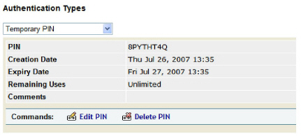
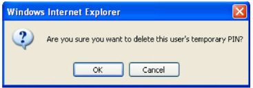

|
IdentityGuard Server 13.0 Administration Guide |
|
IdentityGuard Server 13.0 Administration Guide |
Delete temporary PINs when they expire or are no longer needed. You can set the temporary PIN policies to automatically delete a temporary PIN after a user authenticates with a valid card or token (see Configuring temporary PIN policies).
To delete a user’s temporary PIN
1. Log in to the Entrust IdentityGuard Administration interface as the administrator.
 On the
Windows computer where Entrust IdentityGuard is installed
On the
Windows computer where Entrust IdentityGuard is installed
2. Click User Accounts on the main menu.
3. Find a specific user in one of two ways:
● use the Go To Account tab (see Search for information about a specific user)
● use the Find Accounts tab (see Searching for user information)
The View Account page for the user appears.

4. Under Authentication Types, select Temporary PIN, and then click Delete PIN.
A dialog box appears.

5. Click OK.